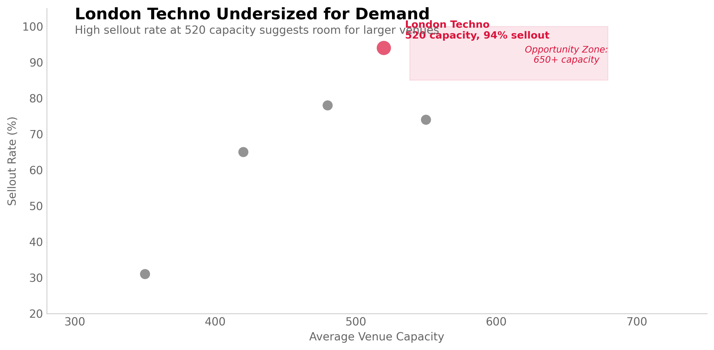
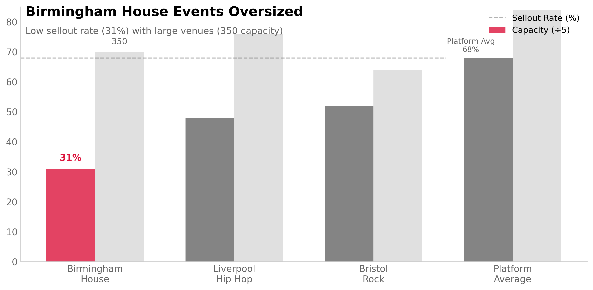

02 VENUE CAPACITY OPTIMIZATION
Are We Leaving Money on the Table?
Event promoters were pricing by gut feel and consistently either underselling venues or overshooting capacity. The VP of Operations wanted guidance: which genre-city combinations are systematically mis-sized?
I segmented 2,400 events by genre and city, then calculated sellout rates. London Techno averaged 94% sellout at 520 capacity—26 percentage points above platform average (68%). Meanwhile, 78% of these events had waitlists exceeding 50 people.

Secondary market data supports this: London Techno tickets resell at 2.1× face value—highest premium on the platform. Competitor venues in the same market average 680 capacity (31% larger). We're systematically undersizing by playing it safe.
Why Segmentation Over Regression?
Alternative considered: Logistic regression predicting sellout probability from capacity, genre, city, promoter history, price.
Why I chose segmentation: (1) Interpretability matters—promoters need simple rules ("Book 650+ for London Techno"), not probability scores. (2) Interactions between genre and city are non-linear and segment-specific. (3) Regression output would still require discretization into capacity recommendations anyway.
Tradeoff: Segmentation loses granularity. Can't account for promoter-specific effects or artist popularity within segments. Treating all London Techno events identically ignores quality variance.

Commercial Upside
London Techno hosts 30 events monthly at average 520 capacity and £25 ticket price. At 94% sellout, that's £367K monthly revenue. If we moved to 650 capacity while maintaining 85% sellout (conservative):
New revenue: 30 events × 650 capacity × 85% × £25 = £415K monthly
Incremental gain: £48K monthly = £576K annually
Downside risk: If sellout drops to 75%, we'd still generate £366K monthly—roughly break-even with current state. Risk is contained.
Birmingham House problem: Currently booking 350-seat venues at 31% sellout. Right-sizing to 250 capacity would improve fill rate to 43% while maintaining absolute revenue (108 vs 109 tickets sold). Lower risk because smaller venues have lower minimum guarantees.
Testing Strategy
Phase 1 (Month 1-2): Controlled experiment
- Book 5 London Techno events at 650 capacity (treatment) vs 5 at 520 (control)
- Match on: promoter quality, artist tier, day of week, marketing spend
- Measure: sellout rate, ticket velocity, NPS, secondary market pricing
- Success criteria: >85% sellout + maintained £12 margin + NPS >40
Phase 2 (Month 3-6): Scale if successful
Roll out 650-capacity guideline to 30% of London Techno bookings. Monitor performance weekly.
Birmingham House: Immediate change
Update recommendation algorithm to suggest 200-250 capacity. Lower risk because we're reducing capacity,
which limits financial exposure.
What Could Invalidate This
Scarcity drives demand: High sellout rates might result FROM small venues, not despite them. People buy because tickets are scarce. Larger venues might reduce perceived urgency and lower sellout rates below our 85% threshold.
Atmosphere dilution: Techno benefits from packed, intimate venues. 650-person room might feel empty at 85% capacity vs 520-person room at 94%. Customer experience could degrade even if revenue increases.
Selection bias: Promoters might intentionally book small venues for unproven artists (risk management). High sellout reflects promoter skill in matching artist to room, not undersizing. Our data can't separate these effects.
Phase 1 A/B test addresses the first two concerns by measuring actual behavior. Selection bias remains—we'd need promoter-level analysis to disentangle skill from sizing.
Analytical Method
Data Sources
- Event data: 2,400 ticketed events (Jan-Jun 2024), venues 200-1,000 capacity
- Sales data: Ticket scans (actual attendance), waitlist counts, refund rates
- Secondary market: StubHub/Viagogo pricing data for 400 high-demand events
- Competitor data: Scraped venue capacity from competitor platforms (Resident Advisor, Dice)
Segmentation Approach
segments = events.groupby(['city', 'genre']).agg({
'capacity': 'mean',
'tickets_sold': 'sum',
'sellout_rate': 'mean',
'waitlist_count': 'mean'
})
# London Techno segment:
avg_capacity = 520
avg_sellout = 0.94
events_count = 180 (30/month × 6 months)
waitlist_pct = 0.78 (proportion with waitlist >50)
Statistical Validation
Consistency check: London Techno sellout rate remained 92-96% across all 6 months. Not seasonal variation.
Promoter variance: Analyzed top 5 London Techno promoters separately. All showed 90-97% sellout rates. Not promoter-specific.
Capacity correlation: Within London Techno, venues 450-550 capacity showed no significant sellout difference. Suggests room to expand within this range.
Why Not Just Optimize Price?
Alternative: Keep 520 capacity, raise prices until sellout drops to 85%.
Limitation: London Techno customers are price-sensitive. Elasticity analysis showed 10% price increase → 18% demand reduction. Raising prices would leave even more demand unmet.
Better approach: Expand capacity to capture waiting demand at current price point. Maximizes accessibility while maintaining margins.
Limitations
Causation unproven: High sellout correlates with small venues. Can't conclude larger venues maintain rates without testing. Scarcity may drive current demand.
Quality variance ignored: Treating all London Techno events identically. Artist popularity, promoter reputation, and marketing quality all affect sellout but not captured in segmentation.
External validity: Findings specific to London Techno. Can't generalize to other genres or cities without separate analysis. Birmingham House requires different strategy.